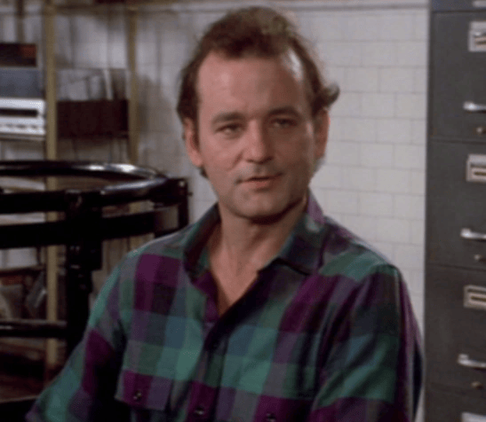
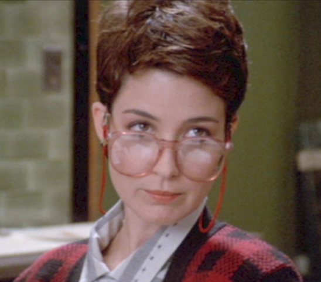
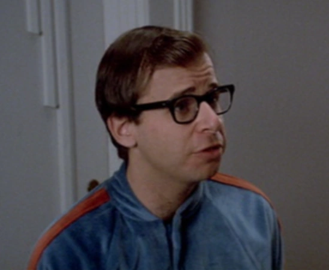

About Us

Dr. Egon Spengler
Dr. Egon Spengler, Ph.D. (also known as Egie, Spengie, and Dirt Farmer) was a former professor of paranormal studies at the Columbia University. Upon his termination, Egon founded Ghostbusters, Inc. along with Doctors Ray Stantz and Peter Venkman.
He is considered the brain behind the Ghostbusters and has designed and built nearly all of their equipment, including the Proton Pack and the Storage facility.
"Print is dead."

Dr. Ray Stantz
Dr. Raymond "Ray" Stantz was one of the original Ghostbusters and was one of the most devoted to the pursuit of studying the paranormal. Ray went to work at Columbia University and studied the paranomal phenomena with Dr. Peter Venkman and Dr. Egon Spengler.
Ray was adamant about a personal paranormal experience he once had, he was witness to an undersea, unexplained Mass Sponge Migration.
"Let's see if he wants s'more? Get it! I'm funny too, you know!"

Dr. Peter Venkman
Dr. Peter Venkman is one of the original Ghostbusters. He has doctorates in both psychology and parapsychology and then became a professor at Columbia University where he worked with Dr. Egon Spengler and Dr. Ray Stantz.
While he may not be as technically experienced as his crewmates, his charisma and charm allows him to be the talker of the team. He's also the best in paranormal combat.
"Suck in the guts, guys, we're the Ghostbusters."

Winston Zeddemore
Winston Zeddemore was the fourth member to join the Ghostbusters. He saw a job advertisement in the wanted ads and replied.
He is the common man of the Ghostbusters. He is a responsible dependable person who takes over the mechanical aspect of Ecto-1, leaving Ray more time to work with Egon and build new equipment.
"Just once I wouldn't mind running with all those fools AWAY from the trouble!"

Janine Melnitz
Janine was the first person hired to work at the Firehouse. She staffed the phones and kept track of appointments, calls, messages, etc. Janine is highly sardonic with her eccentric bosses, while taking her job in such an unusual business in stride. As such, no matter how strange circumstances become at work, she is largely unflappable. Her hobbies included racquetball and reading.

Louis Tully
Our latest hire and our amazing accountant! He tends to be obsessive compulsive when it comes to matters of taxes. More often than not, conversation with him will eventually steer into tax or monetary matters. He's always willing to help out, sometimes with embarrassing results for him, and he'll always point out an opportunity to a friend where they can save money on something.
NEWS

TOP 5 WAYS to Keep Yourself Safe from Ghosts!
EXCLUSIVE! An Interview with Egon Spengler
The End of Stay Puft?
Ray Stantz on the Matter...